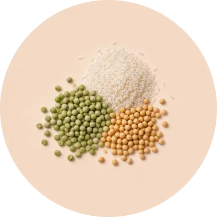

TODO: Протеиновая
TODO: растительная матрица
TODO: из сои, гороха и риса
- TODO: Богатый аминокислотный профиль для полноценной замены одного приема пищи
- TODO: Постепенное усвоение без скачков инсулина.
- TODO: Подходит для разных типов питания